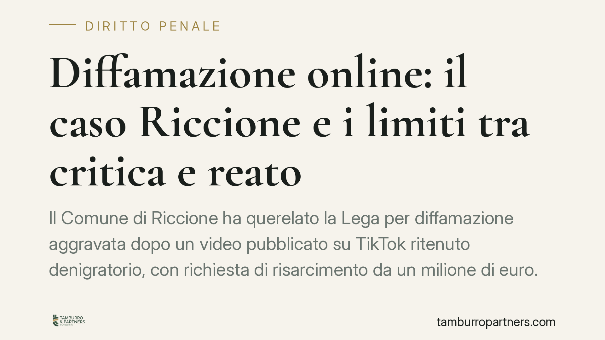

Diffamazione online: il caso Riccione e i limiti tra critica e reato
Il Comune di Riccione ha querelato la Lega per diffamazione aggravata dopo un video pubblicato su TikTok ritenuto denigratorio, con richiesta di risarcimento da un milione di euro. La vicenda solleva questioni note: chi può considerarsi offeso, come rilevano i social e dove passa il confine tra critica politica lecita e diffamazione penalmente rilevante.

Il fatto
Il Comune di Riccione ha annunciato una querela per diffamazione aggravata nei confronti della Lega, in relazione a un video diffuso su TikTok ritenuto lesivo dell'immagine dell'ente e dei suoi amministratori. È stata prospettata una richiesta risarcitoria di un milione di euro, che l'amministrazione ha dichiarato di voler destinare a famiglie in difficoltà.
Al di là della vicenda specifica, il caso offre l'occasione per chiarire alcuni punti tecnici spesso confusi nel dibattito pubblico.
Inquadramento normativo
La diffamazione è prevista dall'art. 595 c.p. e punisce chi, comunicando con più persone e in assenza dell'offeso, ne lede la reputazione. Va distinta dall'ingiuria, che presupponeva la presenza della persona offesa: dal 2016 l'ingiuria non è più reato ma illecito civile (d.lgs. 7/2016).
Un punto delicato riguarda il soggetto passivo. La persona giuridica — quindi il Comune come ente — non è, secondo l'impostazione prevalente, soggetto passivo diretto del reato di diffamazione. La tutela penale opera attraverso gli amministratori concretamente identificabili e offesi nella loro reputazione personale. L'ente, invece, agisce tipicamente in sede civile per il danno all'immagine (art. 2043 c.c. e principi consolidati sul danno non patrimoniale delle persone giuridiche). La distinzione non è formale: incide su chi può proporre querela penale e su quale sede vada azionata la pretesa risarcitoria.
Quanto all'aggravante, l'art. 595, terzo comma, c.p. richiama l'offesa recata «col mezzo della stampa o con qualsiasi altro mezzo di pubblicità». L'inquadramento dei contenuti diffusi sui social network in questa categoria costituisce un orientamento giurisprudenziale, non un dato pacifico: parte della dottrina discute l'assimilazione dei social alla stampa e la questione resta aperta. In ogni caso, ciò che integra l'aggravante è il mezzo di pubblicità utilizzato; la diffusione ampia del contenuto ne è espressione, non un elemento autonomo.
Il confine tra critica e diffamazione
La libertà di manifestazione del pensiero è garantita dall'art. 21 Cost. e la critica politica gode di un'ampia tutela. Ma la scriminante del diritto di critica opera entro due limiti consolidati:
- Verità dei fatti: la critica deve poggiare su un nucleo di fatti veri o ragionevolmente ritenuti tali;
- Continenza: l'espressione deve restare misurata, senza trascendere in attacchi gratuiti alla persona.
Quando l'esposizione degenera in offesa personale non pertinente ai fatti, la copertura costituzionale viene meno e può residuare la rilevanza penale.
Implicazioni pratiche
Per chi produce contenuti — amministratori, forze politiche, comunicatori — il messaggio è che il mezzo digitale non abbassa la soglia di responsabilità. Un contenuto pubblicato su una piattaforma social è potenzialmente valutabile alla stregua di uno strumento di pubblicità, con le conseguenze sanzionatorie del caso.
Per chi si ritiene offeso, va tenuto presente il termine di proposizione della querela: l'art. 124 c.p. fissa in via generale tre mesi, decorrenti dal giorno in cui l'offeso ha avuto notizia del fatto che costituisce reato. Si tratta di un termine da non trascurare, perché la sua inosservanza preclude l'azione penale.
Sul piano risarcitorio, la cifra domandata in una richiesta non equivale al risultato: la quantificazione del danno all'immagine spetta al giudice ed è tendenzialmente ancorata a criteri equitativi e alla prova concreta del pregiudizio.
Cosa fare in concreto
- Conserva le prove: acquisisci screenshot completi del contenuto con data, URL e, se possibile, procedi ad acquisizione forense per garantirne l'integrità nel tempo.
- Identifica il soggetto realmente leso: distingui tra offesa alla persona fisica (via penale) e danno all'immagine dell'ente (via civile), perché cambiano legittimazione e sede.
- Verifica i termini: se intendi querelare, calcola i tre mesi ex art. 124 c.p. dalla notizia del fatto e non attendere l'ultimo giorno.
- Valuta la scriminante: prima di agire, considera se il contenuto rientri nel diritto di critica (verità e continenza), perché ne dipende la fondatezza dell'iniziativa.
- Ponderare le opzioni con un legale: è opportuno valutare l'una o l'altra strada con assistenza professionale, calibrando strumenti penali e civili sull'obiettivo concreto.
Nota metodologica
Alcune pronunce citate nel dibattito pubblico su questi temi vanno sempre riscontrate nella fonte ufficiale prima di attribuirne il principio: l'esatta individuazione della sezione e del provvedimento è condizione per una lettura affidabile.
Ogni condominio ha una storia a sé.
Se gestisci un'amministrazione e vuoi un confronto su una specifica questione condominiale, scrivi allo studio. Ti rispondiamo entro un giorno lavorativo.